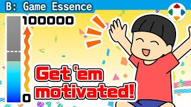
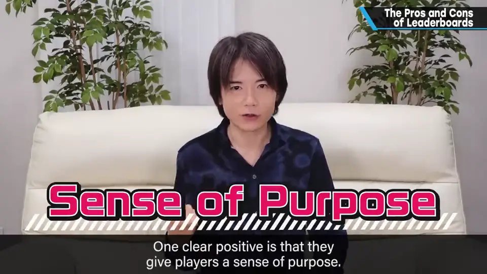
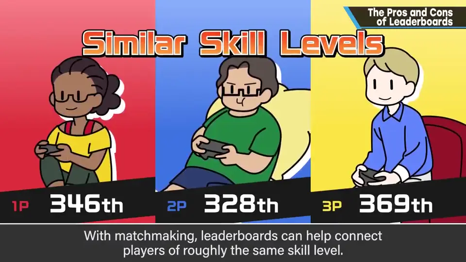
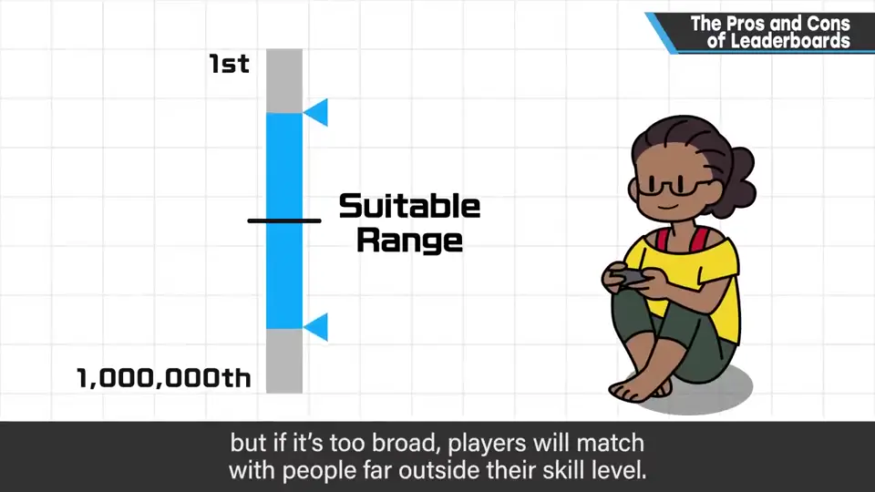
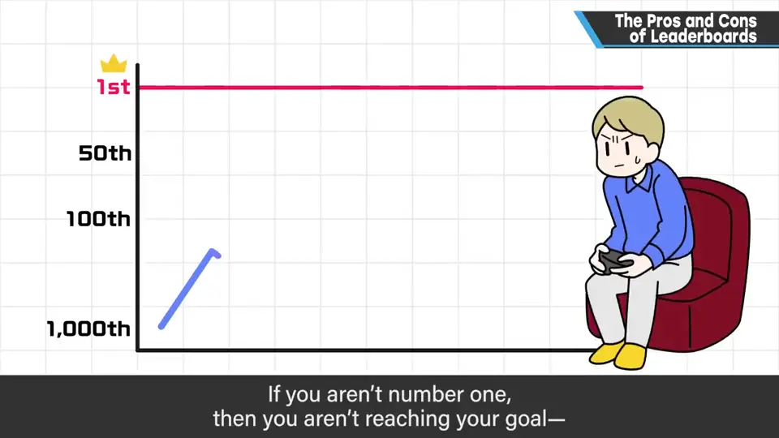
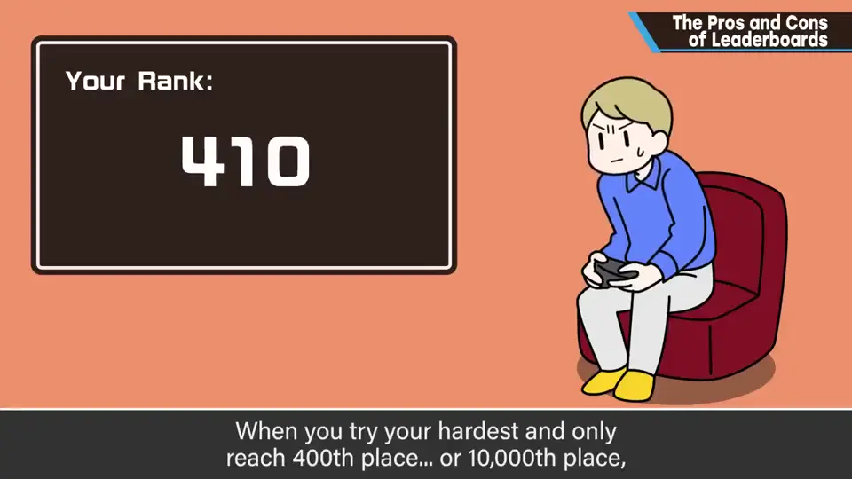
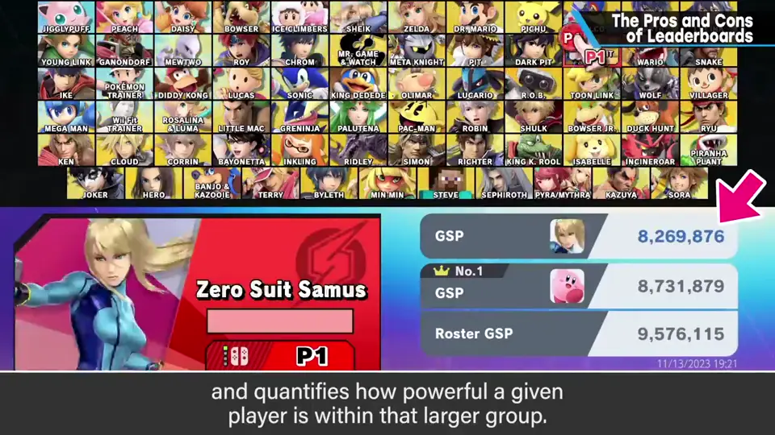
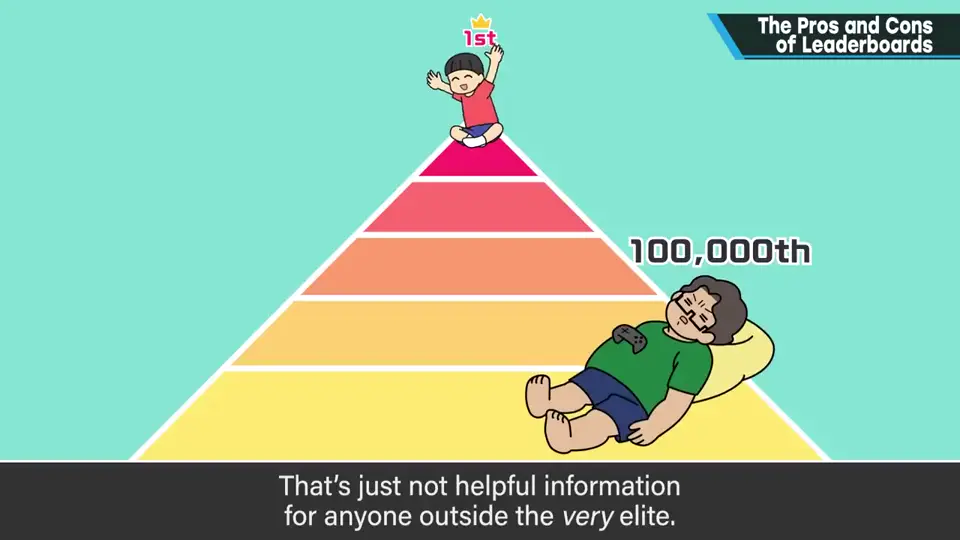
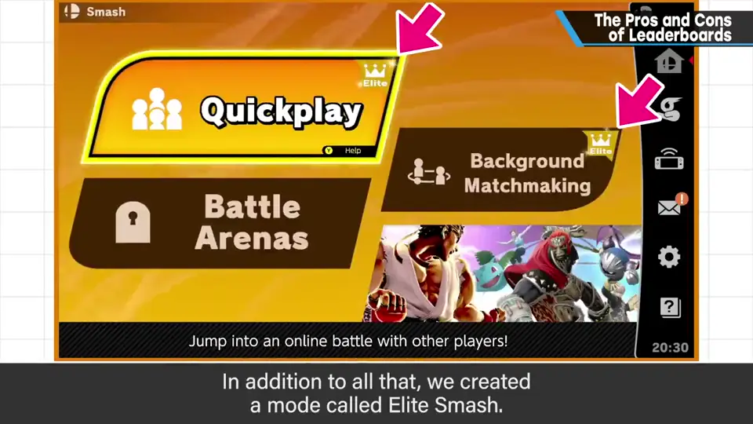

速览
网络排行榜有好有坏。好处首先是给人目标意识：没有排名、打完就结束会很无聊；努力的成果与往上爬的动机相连很重要。其次，它是匹配时寻找实力相近者的指针。但实力相近、网速足够、离得近又同时在玩的人，一般来说极为罕见，尤其要考虑人口少的地区：匹配范围窄就一直匹配不上，放宽又会碰上实力差距大的人，很难兼顾。坏处，夸张地说是永远的屈辱感：除非第 1，否则永远没达成，可以说一直在输（其实换个想法也可以说一直在赢，但排名让这种实感变淡）；拼命努力还显示第 4001 或 1 万名，也提不起劲。为此《大乱斗》加入了世界战斗力：以全世界最大游玩人数为分母、把你有多强数值化的逆向排名——把「越低越好」的排名变成「越高越好」。老实说有些地方没运作好，但比普通排名好得多；大乱斗玩家极多，母数大，没人会因为「第几百万名」而开心。它还能不显示世界顶层——除了极少数顶尖玩家，看了只会因差距而放弃——也能自然排除作弊上传的错误数据。再加上VIP 房间（Elite Smash）：给上位者「被选中者」的满足感，同时让上位者在 VIP 中对战，防止他们流入低排名玩家中。理所当然的东西并非理所当然——也想想跳出普通排行榜的方法。
1. 排行榜的好处 0:04
- 给人目标意识：没有排名、只是打完就结束会很无聊；努力的成果与往更高处的动机相连很重要。
- 作为匹配时寻找实力相近者的指针。



但网络对战中，实力相近、网速足够、离得近、又在同一时间玩的人，一般来说极为罕见，尤其要考虑人口少的地区：匹配范围窄就一直匹配不上；放宽又会遇到实力差距大的人。这很难兼顾。
2. 排行榜的坏处 1:01
夸张地说：永远的屈辱感。除非拿到第 1，否则永远没达成目标，可以说一直在输。
这只是心态问题——实际上也可以说一直在赢——但在排行榜上这种实感可能很淡。不管多努力，显示的都是第 4001 名、第 1 万名，也提不起干劲吧。


3. 《大乱斗》的世界战斗力 1:35
为了在一定程度上解决，《大乱斗》加入了世界战斗力：一种逆向排名——以全世界游玩人口的最大数为分母，把你在其中有多强数值化。也就是把「越低越好」的排名，变成「越高越好」。


- 老实说有些地方没运作好，但比普通排名好得多。《大乱斗》玩家非常多，母数也大——被说成「第几百万名」不会开心吧。
- 可以不显示世界顶层：除了极少数顶尖玩家，看了只会因与自己的差距而放弃。
- 作弊上传的错误数据，也能自然地被排除。
另外还准备了 VIP 房间（Elite Smash）：既给上位者「被选中者」的满足感，又让上位者在 VIP 中对战，防止他们流入排名低的玩家之中。

自测题
1. 排行榜有哪两大好处？
给人目标意识（努力成果与向上动机相连）；作为匹配时寻找实力相近者的指针。 0:04
2. 排行榜的主要坏处是什么？
夸张说是永远的屈辱感：不是第 1 就永远没达成，像一直在输；努力后还显示第 4001 名之类也提不起劲。 1:01
3. 「世界战斗力」与 VIP 房间分别解决了什么？
世界战斗力：以全球玩家数为分母的逆向排名，越高越好、不显示顶层、能自然排除作弊数据；VIP 房间：给上位者满足感，并防止他们流入低排名玩家中。 1:35